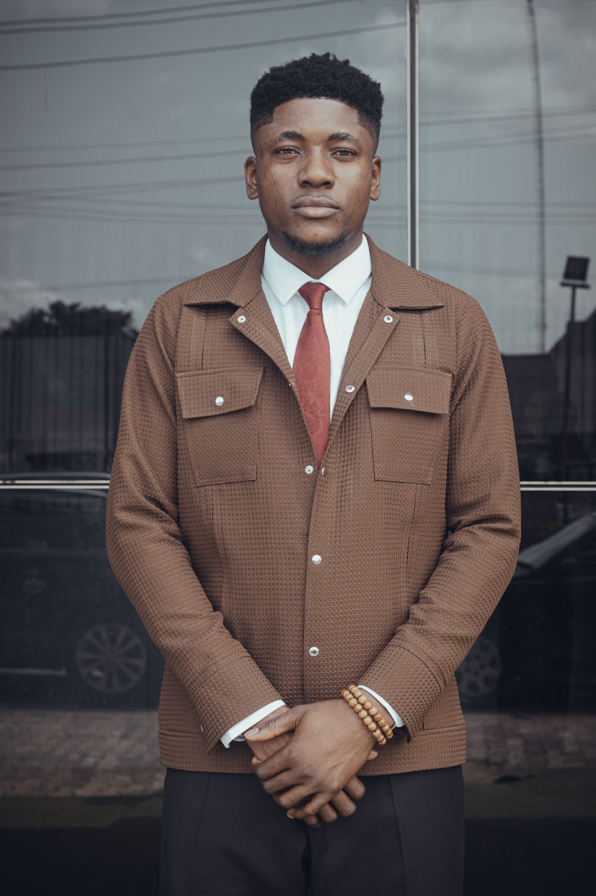

Cybersecurity foundations
Learning digital safety, privacy, and the principles of protecting information.
CURRENT LEARNINGTHE PERSON BEHIND THE PORTFOLIO
A student, a creative entrepreneur, and a lifelong learner interested in how we create, share, and protect things that matter.

BASED IN PORT HARCOURT, RIVERS STATE, NIGERIA
MY STORY
I am an emerging cybersecurity professional currently studying at Miva Open University. My interest in this field comes from a passion for personal and intellectual property security, and a desire to understand how digital information can be kept safer.
Outside my studies, I founded DICREATION STUDIO, a creative production brand focused on documenting events and stories through photography and video. Working around digital media has made the value of creative work especially clear to me.
I am at the beginning of my formal cybersecurity journey, and I see each project, lesson, and challenge as an opportunity to improve.
MY LEARNING TOOLKIT
This section reflects my current learning journey. I will continue updating it as I practise and gain experience.
Learning digital safety, privacy, and the principles of protecting information.
CURRENT LEARNINGPractising HTML structure, CSS styling, and JavaScript interactivity through beginner projects.
BEGINNER PRACTICEVisual storytelling, production coordination, and documenting events through DICREATION STUDIO.
CREATIVE EXPERIENCEApproaching new tasks with curiosity, patience, and a willingness to learn through practice.
DEVELOPINGBEYOND THE CLASSROOM
FOUNDER & CREATIVE DIRECTOR
A creative production brand focused on capturing high-impact visual narratives, including corporate events, documentaries, and wedding stories. This work sits alongside my studies and continues to shape how I think about the value and protection of digital media.
ACADEMIC BACKGROUND
Cybersecurity
Undergraduate studies · In progressProfessional certifications and additional courses will be added here when completed and confirmed.
This portfolio can include a short introduction or learning audio/video as the portfolio develops.
Audio placeholder: add an introduction recording atmedia/david-introduction.mp3 if available.